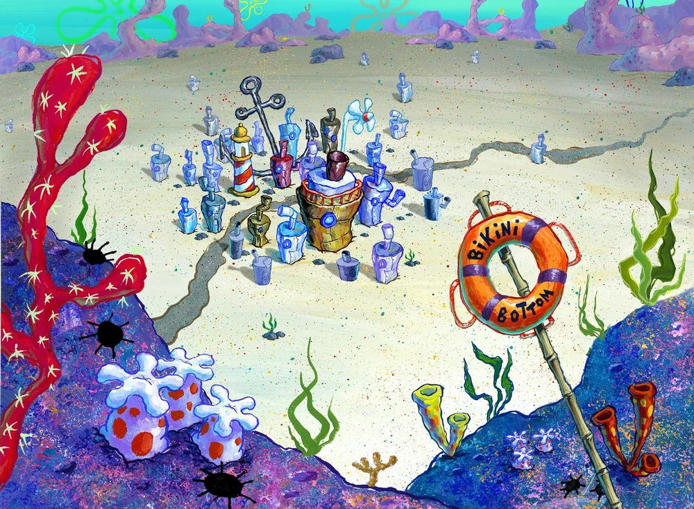
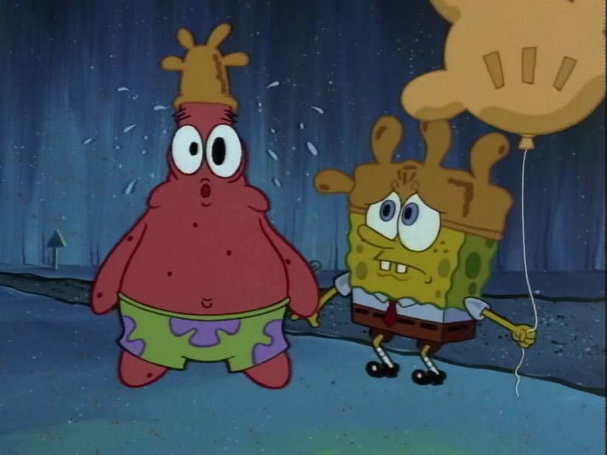
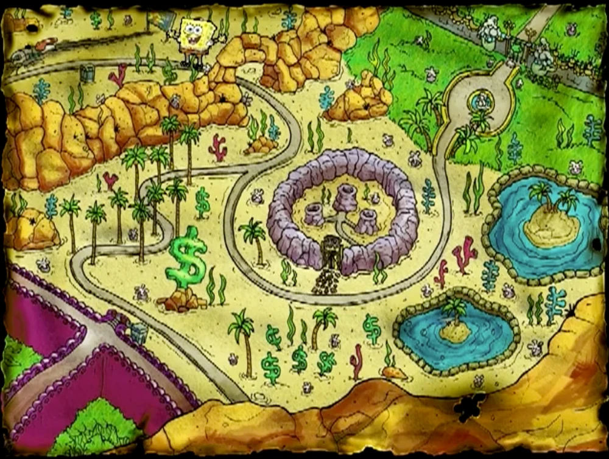
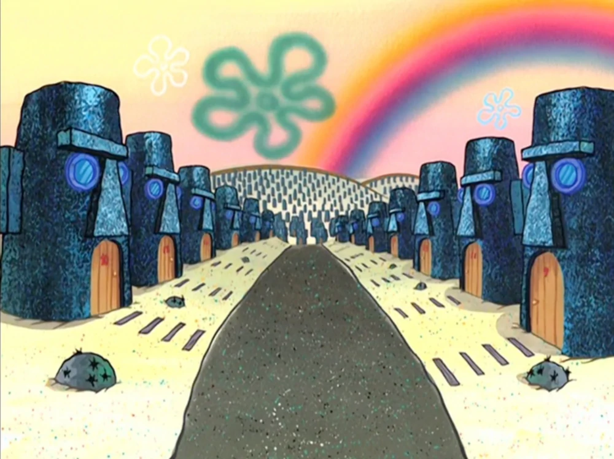
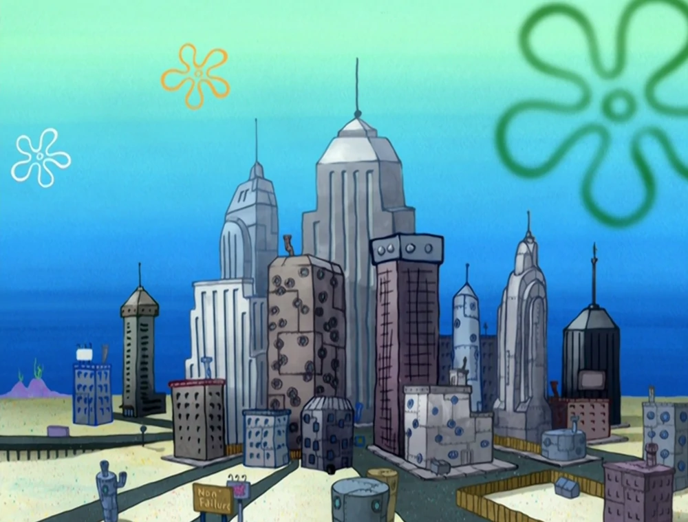
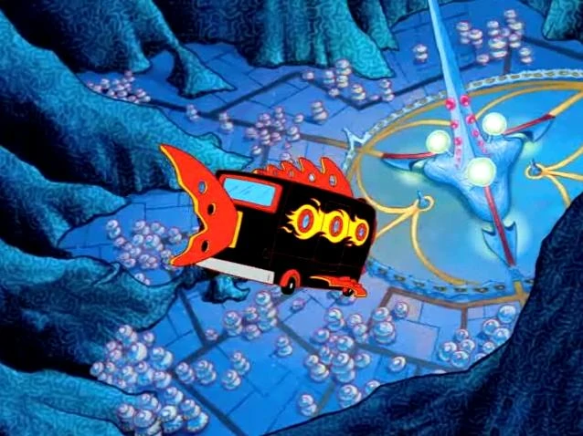
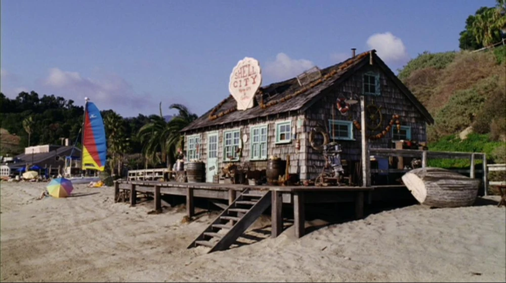

| Image |
location |
introduction |
|  |
Bikini Bottom |
Bikini Bottom is the main setting in SpongeBob SquarePants. Bikini Bottom is a medium-sized city which, according to Squidward, is in the middle of nowhere. It consists of many businesses, including restaurants, stores, and manufacturers. This city also has a booming economy, balanced educational and health systems, a well-structured government, and an exceptional law enforcement system. There are also stadiums, amusement parks, and other recreational facilities. |
|  |
Rock Bottom |
Rock Bottom is a deep-sea trench located beneath Bikini Bottom. The road down to it is exactly 90˚. Everything is pitch black except for a few street lights, and everyone in Rock Bottom speaks a language the same as English, except they blow a raspberry in between every two to four syllables. There is also a candy machine as well as restrooms (though foreigners can't tell which rooms are for men and which are for women). A bus station is present, in which SpongeBob has a hard time catching one (as it kept arriving just as he looked away from the stop). Merlin's Cave is the residence of the weather magician of the sea which is difficult to access. There is also the WSEA news headquarters, the Rusty Anchor, which sells Coral Col and Diet Kelpsi with a lemon twist. Known customers are Patrick, Plankton, and Mermaid Man. In Battle for Bikini Bottom, the Rock Bottom Museum is shown. It features many artworks and has an advanced security system; Barnacle Boy works as a security guard there. The Trench of Advanced Darkness is a trench that is lower than the city itself. Rock Bottom is located past Jellyfish Fields, which is past the Chum Bucket and Krusty Krab. Creatures in Rock Bottom are extremely strange-looking and resemble deep-sea creatures and deep-sea marine life. Some resemble the anglerfish, while others are rather abnormal. Many of them resemble the typical "sea monster" someone would describe. It is shown that some fish living in Bikini Bottom work there, as some fish in the Employee of the Month video game don't speak in the Rock Bottom language. |
|  |
Bottom's Up |
Bottom's Up is a very fancy city seen in the Employee of the Month (video game). It is a sister city to Bikini Bottom. The only thing that is not fancy is Cowfish Craig's shack, the owner of which is criticized. Other establishments include the Sublime Seafoods, Oxygen Springs, and the Waverly Hills neighborhood. Waverly Hills is a wealthy district on the cliffs of the Kelp Forest. The sky and water murk seem to be different here; it is always as if it is sunset. Once, Sandy has been to this city. |
|  |
Tentacle Acres |
Tentacle Acres is a gated community of octopuses living in Easter Island Heads. Sponges and starfish aren't allowed to set foot in this town, but SpongeBob and Patrick get in thanks to the smell of fried oyster skins that Patrick had eaten earlier. Activities here include bike riding, clarinet playing, croquet, and interpretive dancing. However, childish games such as playing with reef blowers are not allowed in Tentacle Acres. Establishments besides the Easter Island heads include the Full of Health grocery store, an Interpretive Dance Academy, a park, Le Café (food stand) an Ice Cream Stand, and the Security Office. Only one street name is revealed, in which Squidward stayed at, it is called New Life Street (containing houses 302, 303, and 304). Most of the people living here resemble Squidward, just with different features (eyes, hair, etc.). |
|  |
New Kelp City |
New Kelp City is a huge modern city that - apart from appearing in books and video games - appears in one episode: "What Ever Happened to SpongeBob?" In this episode, SpongeBob ends up at the city after losing his memory. New Kelp City is terrorized by a gang named The Bubble Poppin' Boys. SpongeBob becomes the new mayor of New Kelp City by defeating The Bubble Poppin' Boys. The city is a parody of New York City. |
|  |
Atlantis |
Atlantis is the lost city located in the Atlantic Ocean. There appears to be 2 different versions of Atlantis, one of which is ruled by King Neptune and has Roman and Greek architecture. This Atlantis It is home to Neptune's Palace and The Poseidome. This version of the city appears first in the episode "Neptune's Spatula." The other is ruled by Lord Royal Highness and has a very futuristic appearance. It shows up in the special episode "Atlantis SquarePantis" and was the home to the Oldest Living Bubble. Atlantis is based on the real world legend of Atlantis. |
|  |
Shell City |
Shell City despite its name, is not actually a city: it is a gift shop called Shell City: Marine Gifts and Sundries. It is located on the surface on a beach and is owned by a Cyclops (in reality, a man in a diving suit), selling dried-out dead sea creatures. The road to Shell City is dangerous and no one has ever returned from there, which makes it the perfect place for Plankton to sell Neptune's crown in the movie. It is located on a beach where SpongeBob and Patrick meet David Hasselhoff. In a deleted scene of the movie, (which can be seen in the SpongeBob SquarePants Movie DVD), Shell City is actually a city and is where Sandy constantly gets pursued all over the place by squirrel exterminators in black suits. She also mentions that there are buses that arrive here going to Bikini Bottom. Although Shell City was filmed in Florida, the location in SpongeBob's world would land Shell City in Australia most likely due to a sign in a SpongeBob book based on the movie that says that Shell City is 3,000 miles away from the Thug Tug. The Thug Tug is not that far from Bikini Bottom. Bikini Atoll is approximately 5,000 miles from the United States, which couldn't mark Shell City in California. |